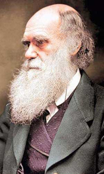
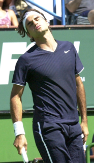
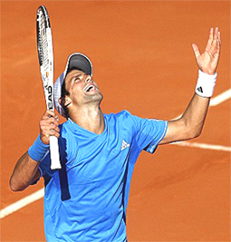
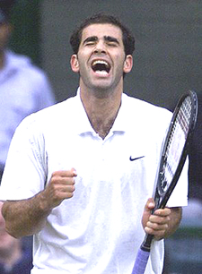

Previous: Why Do We Want to Win? | 🏠 Mental Game Home | (end of section)
Why Emotions Can Be Counter Productive
Comprehensive unified tennis knowledge base — Fundamentals, Stroke Analysis, Reference Library, and more
Why Emotions Can Be Counter Productive
By Allen Fox, Ph.D.

Darwin's theory of emotional response is at odds with what happens in tennis matches.
Emotions are often counterproductive in tennis. Most counterproductive emotional responses during tennis matches are driven by subconscious fears of failure and urges to escape the stress of competition.
Charles Darwin would have it that emotional responses generally evolve because they, in some way, enhance prospects for species survival. In other words, they are supposed to be helpful. Unfortunately, in tennis matches the opposite is usually the case.
Our nervous systems were not designed to exert fine motor control for long periods of time under high stress. Certain normal emotional responses, in particular those involving escape from prolonged and excessive anxiety, frequently make players lose to opponents who are physically and technically inferior.
By its very nature, tennis is an emotional game. Of course, it may not look it from the outside, but as noted in the first article, tennis is constructed to be a one-on-one, non-contact fistfight.
Tennis is inherently antagonistic since players use their tennis tools to break down their opponents. It is a battle of wills, where players compete for physical and mental dominance, where threat and intimidation play significant roles in victory, and where one contestant ultimately proves himself directly superior to his opponent. This makes the emotional stakes far greater than they appear. Closely-contested matches are stressful because winning them is so pleasurable and uplifting, and losing them is so painful.
It's not normal to exert fine motor control for long periods under stress.
Uncontrollable Outcomes
Uncontrollable outcomes cause stress. For the serious tennis competitor, one who has invested countless hours honing tennis skills and who competes full-bloodedly, the emotional stakes of match-play are high. The problem is that the outcome is not controllable.
It is an unpleasant fact of life that no matter how hard you train, how well you concentrate, how shrewd your game plan is, and how perfectly you control your emotions, you cannot be sure of winning against an opponent of equal ability. The scary truth of competition is that you can do everything right and still lose.
This is the structure for a fearful and uncomfortably stressful state of affairs. Essentially, you have players in a situation where one outcome is very pleasant and the other is very painful, but try as they might, they cannot control the outcome. It is a structure tailor-made for stress, anxiety, and escapism.

You can do everything right and still lose.
By way of analogy, I have seen a similar paradigm in a psychology experiment. There dogs were strapped into an apparatus where, when shown an illuminated circle on a screen, they could press a bar and receive a reward of food. Of course, they soon learned to press the bar to get the food.
Then they were shown an illuminated ellipse on the screen. If they pressed the bar in this case, they were given a painful electric shock. They soon learned not to press the bar when the ellipse appeared. So far, so good.
But then came the tricky part. The experimenters began to change the shape of the ellipse to make it look more like a circle. The time finally arrived when the dog could not tell the difference between the circle and the ellipse, making the task of discrimination impossible. Yet the dog continued to try to figure it out and press the bar, sometimes getting the food and sometimes the shock.
As a result, the dog became increasingly agitated and disturbed, entering a state of what the experimenters termed "experimental neurosis." It yelped and squirmed to avoid being put into the harness. Of course, it had only to stop pressing the bar regardless of what it saw on the screen to avoid the shocks, but the dog kept trying to solve an impossible problem.
So it got randomly rewarded and punished attempting to control an outcome that was uncontrollable. As a result, the dog become very nervous and tried to escape from this stressful and unpleasant situation - much as tennis players often do in an analogous situation.
In experiments, dogs tried to avoid situations with random reward and punishment.
It is natural to try to escape from stress. The usual means of escape from the stress, uncertainty, and uncontrollability of a tennis match are: to become angry, to make excuses, to lose concentration, to focus on and complain about 'problems' rather than solve them or forget them, or to simply give up.
Of course, this is not a conscious decision, nor is it a productive one. But it is quite normal. Any creature will become stressed and try to escape from an uncontrollable situation when the alternative outcomes are randomly pleasant (winning/food) or extremely painful (losing/electric shock).
Escape responses are natural. It is the exceedingly rare (or abnormal) individuals who can remain rational, unemotional, and practical in an important match when, despite their committed efforts, things are going wrong and the prospects of failure loom large.
The vast majority cannot. Since they can't simply pack their bags and run off the court, their alternative is to use forms of mental and emotional escapism to temporarily insulate themselves from the impending pain of defeat.
Anger: an unconscious distortion that protects us from reality.
Defense Mechanisms
When players elect to forget about winning in favor of making excuses, becoming blindly angry, or deciding that further efforts to win are hopeless, they are employing what Sigmond Freud called "defense mechanisms." These are unconscious distortions of perception and interpretation that protect us from unpalatable realities, and they are quite normal.
Freud postulated that cold reality can force us to face stressful or frightening issues that we cannot resolve. At such times we often comfort ourselves, unconsciously, of course, by adjusting the way we see things so that these stressors appear to go away. Defense mechanisms are, in essence, soothing forms of self-delusion. The key to their effectiveness is that while we are using them, we don't realize what we are doing.
If the grapes are sour, then who wants them anyway?
One of the common defense mechanisms employed in tennis matches is called "rationalization." An early example of it in literature was Aesop's fable of the fox and the grapes. Here, unable to reach grapes high above him, the fox rationalizes that they are 'sour' anyway.
Since 'sour' grapes are unpalatable, the fox is not unhappy about being unable to get them. He thus reconciles the discrepancy between his desires and capabilities. (Like the tennis player who says he doesn't care if he wins.) As with all defense mechanisms, it works only because the fox completely believes his own story, a belief made possible because there are elements of truth in it.
Players rationalize when they unconsciously rearrange facts to produce a picture of reality that is less insecure and stressful than the real one. As with all defense mechanisms, some of the real facts in a close tennis match are unpalatable.
At the top of the list is the fact that they may lose, despite their most fervent efforts to win. This is scary and stressful. So players create more attractive depictions by emphasizing different facts and adjusting their viewpoints. Examples are, "I don't care if I win because all I want is the exercise anyway." or "The guy cheated me, and if the cheater wants the match that badly, let him have it." or "I'm so mad I just don't care anymore." or "What's the use of trying? It's just not my day." Here the truth is that the player does want exercise; the player did get a bad call; and the player may well be having a bad day.
There are elements of truth in each statement. But to reach their happy conclusions the players must unconsciously reduce the importance of some facts while amplifying the importance of others. They don't make up false facts; rather they just change the emphasis of real ones. Inconvenient facts are ignored while convenient ones are highlighted.
If it's just not your day, then you are off the hook if you lose.
At the end of this process the rationalizing players are able to reach conclusions that solve their emotional difficulties. It costs them a lot of tennis matches, but while they are doing it, they feel better. Angry players, for example, feel no fear. They are no longer afraid of losing. All they feel is anger - problem solved!
Or, a player who is afraid of losing gets a bad call and decides to tank the match. Once he or she stops trying to win, the fear of losing goes away, and the stress is reduced - again, problem solved! Afterward the player may regret it, but by then it is too late.
Excuses
The example above where players tank because of bad calls fits into the general category of rationalization we all recognize as excuse-making. After anger, excuse-making is probably the most wide-spread method of escape from the stress and uncertainty of competition. It's a particularly fertile field and comes in a thousand disguises.

Excuses magnified out of proportion mask the real issues about winning.
Here the 'problem', whatever it is, becomes magnified out of proportion and fills the rationalizing player's mind so as to mask the real issue of winning. Of course, there are a host of counterproductive consequences, but the most obvious is that it makes us lose matches.
We have all had plenty of experience with opponents making excuses for losing, and while we may be too polite to say so, we tolerate it as a character weakness, maybe even a small moral deficiency. In any case, we don't like it. (Fortunately, we rarely make excuses ourselves except under unusual circumstances. Or do we?)
It is an obvious 'excuse' when our opponents see fit to share their on-court 'problems' with us, and we suspect they are ungraciously fabricating it to devalue our victory. On the other hand it is simply a 'problem' when we share our on-court troubles with them. We feel that they need to know these things to truly understand the situation. We think they are missing something if they don't realize we were playing with an extraordinary handicap, and they have been fortunate to avoid a sound thrashing.
What confuses most of us with the excuse issue is that when we make them, the problems we tell people about are real. For example, if you have a pulled leg muscle and can't run normally, would it be an excuse if you mentioned this fact to other people? The answer is yes! That it's real is beside the point. Almost all excuses made by anybody are real. It's just that nobody wants to hear them.

His Grand Slam record was in part a triumph of mind over emotion.
Your motivation in telling people your excuse is to convince them that you are a better tennis player than today's result might indicate. You hope to improve their opinion of you or at least get some sympathy. Unfortunately, you will get neither and will, in fact, accomplish exactly the opposite.
In the best case they might believe your excuse is real, but they still see you as weak for having to tell them about it. In the worst case, they don't believe you and think you are fabricating on top of being weak. In either case, they lose some respect for you.
Finally, nobody except your mother is interested in your tennis problems, real or not. If you feel an excuse coming, bite your lip, and resist talking about it. Put it out of your mind or work around it. If you want to win the match you will need all your mental faculties focused on playing better. Lamenting your problems will simply distract and weaken you.
You should be interested in problems only in so far as they make you alter your game plan to play around them. For example, if your leg hurts and you can't move normally you can still win. You just have to hit more severely so that your opponent can't get to your legs and be determined to execute better when you do get to the ball. Worrying about your leg and thinking about telling people about it only detracts from your execution, where you need to be better focused than ever.
Sampras
If that seems improbable strategy, consider the case of the great Pete Sampras. At Wimbledon in 2000, Sampras won his 13th Grand Slam title, breaking the record then held by Roy Emerson. Preparing for the tournament, Sampras developed a shin inflammation with fluid under the skin that required acupuncture and cortisone injections. The leg was so painful he was virtually unable to practice between matches.
Press play to hear Pete talk about overcoming adversity to break the Grand Slam record.
In his autobiography Pete reveals that by the time he reached the final against Pat Rafter, "I wasn't exactly playing on one leg, but it was getting awfully close to that."
Yet, because Sampras refused to talk about the injury to the press, most observers were unaware of how much pain he was in.
Instead of making excuses, Pete used the injury to motivate himself to break the record. "The adversity just got me more fired up, once I sniffed the finish line. I was so into the moment I actually enjoyed the pain. It was like, "This is it. Screw it, I'm going to get this done right here. No one said it was going to be easy."
Here is a perfect example from the highest level of the game of how a player can use the power of the mind to triumph over our natural tendency to make excuses and escape challenging and stressful situations.
This article is excerpted from Allen's new book, Tennis: Winning the Mental Match, which will be available at the end of 2010 on Amazon and on Allen's new website, www.allenfoxtennis.net.
Read More From Allen!
Visit him at www.allenfoxtennis.net

Winning the Mental Match Dr. Allen Fox
Tennis is mentally the most difficult sport due to it’s personal nature which makes winning and losing feel more important than they are. In this new book, Allen offers his proven solutions to problems such as choking, reducing stress, finishing matches, and developing confidence. Based on a life time of high level play and coaching success, it’s a must for all competitive players.
Click Here to Order.

Winning may not be everything, but Dr. Allen Fox points out that, if we are honest with ourselves, winning is still eminently preferable to losing. In his new book, The Winner's Mind, Allen lays out an original step-by-step plan for succeeding at any of life's endeavors, based on his first hand and very personal observations of the careers of both world-class tennis players and successful businessman.
The bottom line is that even if you are not a born champion--and only a tiny percentage of us are--you can still use the success strategies of champions to tilt the odds in your favor. Writing with brutal honesty and dry humor, Fox lays out the common mental characteristics of winners in sports and in life. He explains the critical role of intellect over emotion. He analyzes the struggle between ambition and fear and the insidious and pervasive fear of failure that undermines so many of us.
He then outline how to confront and overcome these fears in your life and career, even when they are initially subconscious. Must reading from one of the great thinkers in tennis, and a Renaissance Man in life. Click Here to Order.
To purchase this book you can also send a check for $17.95 to Allen Fox, 1120 Inverness Place, San Luis Obispo, CA. 93401. The price includes shipping.

Allen Fox PhD is a former world class player, a coach, a psychologist, and one of the most original and insightful analysts in modern tennis. A top 10 American player from the glory days before Open tennis, Fox played many of the legendary greats, among them Roy Emerson, Rod Laver, Stan Smith, and Arthur Ashe. At Pepperdine he developed the men's tennis program into an elite contender for national titles, and gave Brad Gilbert the insights that became the foundation for "Winning Ugly". His book Think to Win is a modern classic. He has also starred in a series of acclaimed videos, including Pro Secrets of Match Play and Allen Fox's Ultimate Tennis Lesson.
Source: tennisplayer.net archive — Why Emotions Can Be Counter Productive.docx (John Yandell teaching library, 2002-2022). Extracted and rendered as HTML for Tennis Future Lab.